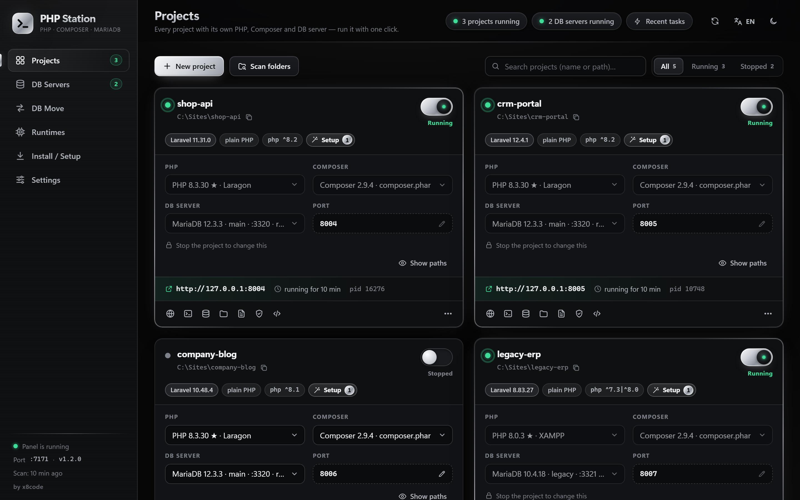
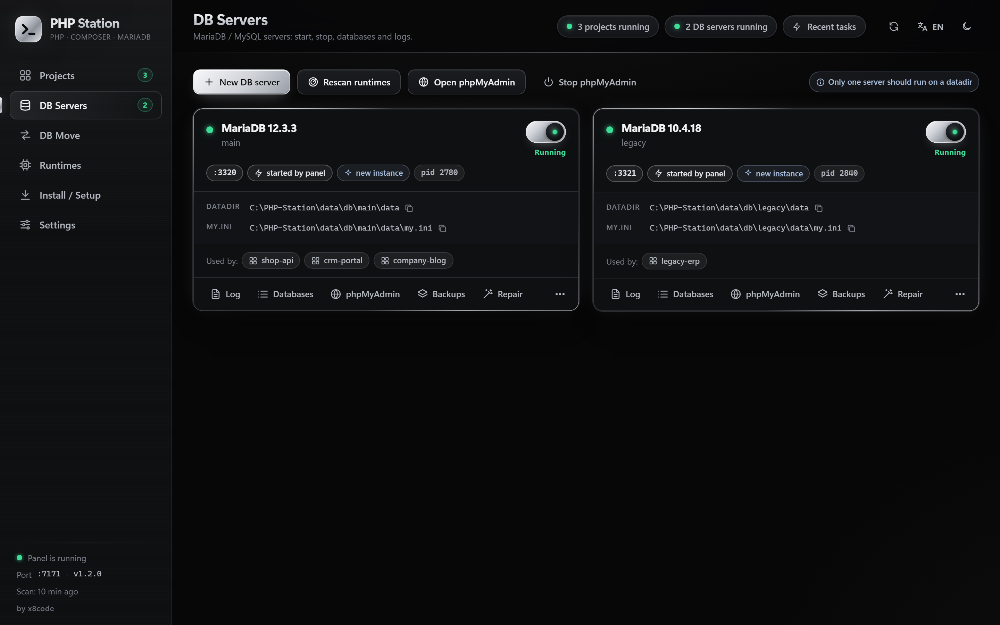
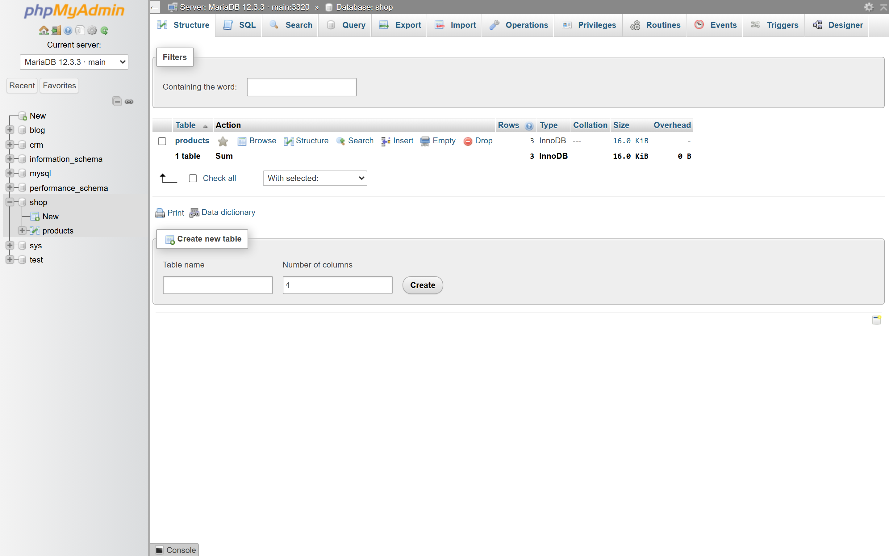
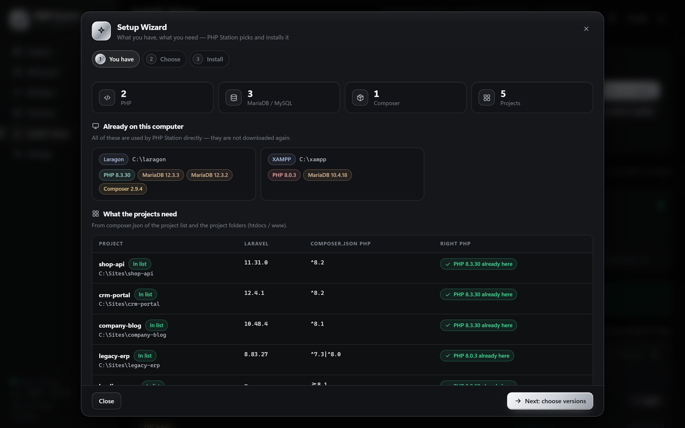
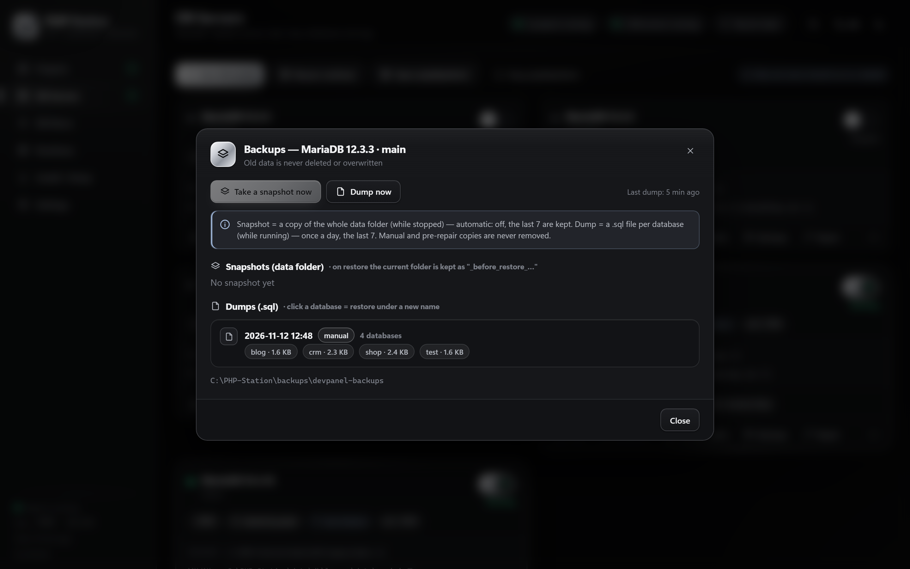
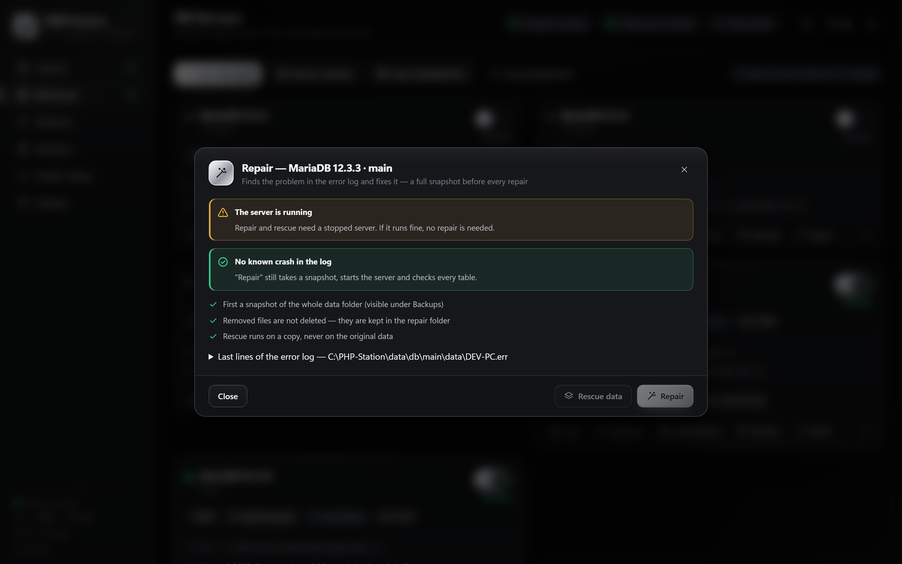
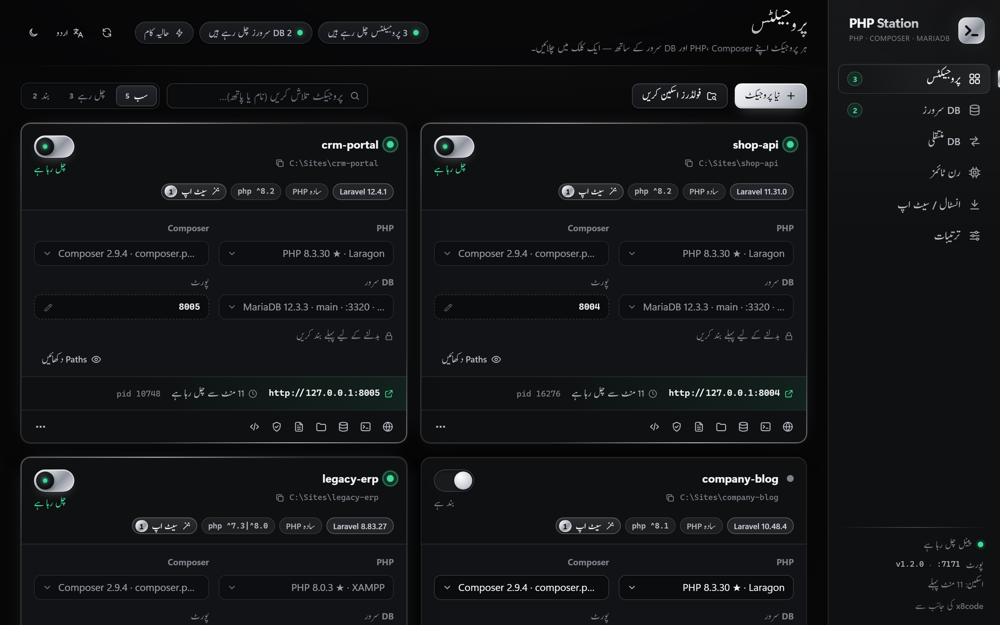

Every PHP project with its own PHP, Composer and MariaDB, side by side on Windows
PHP Station is a free, zero-dependency local development environment. It is a modern XAMPP / Laragon alternative with a setup wizard, built-in phpMyAdmin, crash-safe databases, automatic backups and one-click repair.

What PHP Station does
One small control panel on 127.0.0.1 for every PHP project you have: old Laravel 8 apps, new Laravel 12 apps and plain PHP sites, all running at the same time.
PHP per project
PHP 7.4 to 8.5, side by side. The right version is suggested from composer.json and the Laravel version.
DB servers side by side
MariaDB / MySQL servers each on their own port and data folder, plus new isolated instances in one click.
Setup wizard
Sees what is installed, works out what your projects need, and installs it from the official sources with a SHA-256 check.
phpMyAdmin built in
Every DB server appears on its own port, and a project's database opens with one click.
Crash-safe databases
Clean DB shutdown when Windows shuts down, snapshots before every start, and daily .sql dumps. Old data is never overwritten.
One-click repair
Reads the error log, takes a snapshot, then repairs. InnoDB rescue runs on a copy, never on the original.
Uses what you have
XAMPP, Laragon, WAMP and PATH installs are found automatically. No admin rights, no PATH changes.
Three languages
English, Roman Urdu and Urdu (right-to-left), with dark and light themes.
Screenshots
The screenshots show demo projects.






PHP Station vs XAMPP vs Laragon
PHP Station does not throw away your existing installs. It finds them and uses them.
| PHP Station | XAMPP | Laragon | |
|---|---|---|---|
| Different PHP version per project, at the same time | Yes | No | One global version |
| Several MariaDB / MySQL servers side by side | Yes | No | Manual |
| Clean DB stop on Windows shutdown / sign-out | Yes | No | No |
| Automatic snapshots + daily SQL dumps | Yes | No | No |
| One-click database repair | Yes | No | No |
| Official downloads with SHA-256 check | Yes | – | – |
Get started in a minute
- Download the ZIP and unpack it anywhere (or
git clone https://github.com/sami-hussain-dev/PHP-Station.git). - Double-click PHP-Station.bat. The panel opens at
http://127.0.0.1:7070/, and a Desktop and Start Menu shortcut is created. - The Setup wizard installs what your projects need. Then add a project and switch it on.
Needs Windows 10/11 and Node.js 18+. If Node.js is missing, it is downloaded for you as a portable copy.
Frequently asked questions
How do I run two Laravel projects with different PHP versions on Windows?
Add both projects to PHP Station and choose a PHP version on each card, for example PHP 8.0 for a Laravel 8 app and PHP 8.3 for a Laravel 12 app. Switch both on. Each runs with its own php.exe on its own port, at the same time.
Is PHP Station a replacement for XAMPP or Laragon?
It can be. It installs PHP, MariaDB, Composer and phpMyAdmin by itself. It also works on top of an existing XAMPP or Laragon, whose PHP versions and DB servers appear automatically.
How does PHP Station prevent "MySQL shutdown unexpectedly"?
That error usually comes from a DB server killed during Windows shutdown or sign-out, or from two servers on one data folder. PHP Station's shutdown guard stops every DB server cleanly. It also refuses to start a second server on a data folder that is in use, and it snapshots the data folder before each start.
How do I repair a crashed MariaDB / MySQL database?
Open DB Servers → Repair. PHP Station reads the error log, names the problem, takes a full snapshot and then repairs it. For InnoDB damage, Rescue data works on a copy of the data, never on the original.
Does it need admin rights or change my PATH?
No. Everything goes into PHP Station's own runtimes folder.
Is it free?
Yes. It is free and open source under the MIT license.
پی ایچ پی اسٹیشن
ونڈوز کے لیے مفت لوکل پی ایچ پی ماحول۔ ہر پروجیکٹ اپنے پی ایچ پی ورژن، اپنے کمپوزر اور اپنے ماریا ڈی بی سرور کے ساتھ، ایک ساتھ چلتا ہے۔ ونڈوز بند ہوتے وقت ڈیٹا بیس محفوظ طریقے سے بند ہوتا ہے، روزانہ بیک اپ بنتا ہے، اور خرابی کی صورت میں ایک کلک سے مرمت ہو جاتی ہے۔